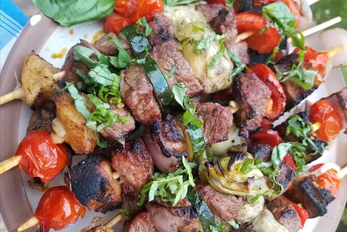

Grilled Panzanella Beef Kabobs

Description
Italian panzanella grilled on a kabob with steak, tomato, mozzarella, and rosemary bread.
Ingredients
- 1 pound beef tri-tip steak, cut into bite-size pieces
- 1 (14 ounce) can artichoke hearts, drained
- 1 red bell pepper, cubed
- 1 zucchini, sliced
- ½ red onion, chopped
- 16 small fresh mozzarella balls (bocconcini)
- 3 thick slices rosemary peasant-style bread, cubed
- 8 bamboo skewers, soaked in water for 30 minutes
- 1 tablespoon balsamic vinegar
- 1 tablespoon olive oil
- salt and ground black pepper to taste
- 1 tablespoon fresh basil, cut into strips
Steps
- Preheat a charcoal grill for medium heat and lightly oil the grate.
- Thread beef, artichoke hearts, bell pepper, zucchini, onion, mozzarella, and bread onto skewers, placing cheese and bread close together towards the ends.
- Mix vinegar, olive oil, salt, and pepper together in a bowl and drizzle over kabobs.
- Grill kabobs, turning frequently, until vegetables are crisp-tender and beef is firm and hot in the center, about 10 minutes.
- Sprinkle fresh basil on top of the kabobs.